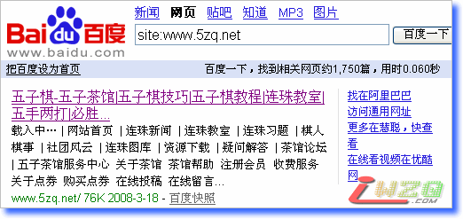
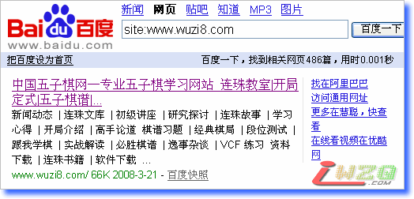
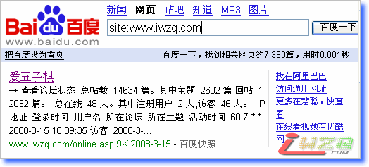
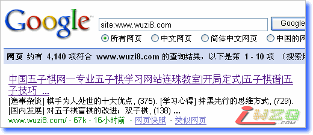
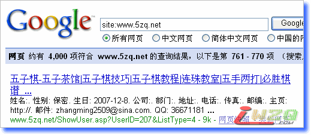
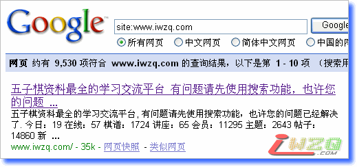

三站搜索引擎收录横向比较
#1 三站搜索引擎收录横向比较 作者：有志青年 发表时间：2008-3-23 9:50:54
以下内容是五子茶馆(www.5zq.net)、中国五子棋网(www.wuzi8.com)和爱五子棋(www.iwzq.com)三个站点分别在百度和google收录条数的数据，仅作记录，以供后期分析。
一、百度收录情况（国人用的可能多一点吧）
爱五子棋(www.iwzq.com)：百度一下，找到相关网页约7,380篇
五子茶馆(www.5zq.net)：百度一下，找到相关网页约1,750篇
中国五子棋网(www.wuzi8.com)：百度一下，找到相关网页486篇
截图如下：



二、google收录情况
约有 9,530 项符合 www.iwzq.com 的查询结果
约有 4,140 项符合 www.wuzi8.com 的查询结果
约有 4,000 项符合 www.5zq.net 的查询结果
截图如下：


#2 Re:三站搜索引擎收录横向比较 作者：无天 发表时间：2008-3-27 15:50:45
呵呵，有志还在研究这个，我来解释一下。
wuzi8.com现在的访问量是不低的（可以查查Alexa排名），平均一个用户要查看5页以上的内容，这说明网站用户的粘合度很高，之所以在百度、在GOOGLE里被收录较少，是因为我现在用了阿里妈妈的广告，阿里妈妈是百度、GOOGLE、分众的死对头了，其中涵义不用多说。
我的观点是，收录不是标准，访问量也不是标准。网站应该坚持自己的东西。
#3 Re:三站搜索引擎收录横向比较 作者：汪洋孤舟 发表时间：2008-5-19 22:15:43
我刚就说过这个网站在搜索引擎中排名还比较高，想不到你还专门做了对比啊！呵呵！